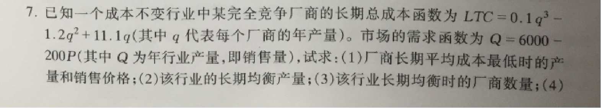
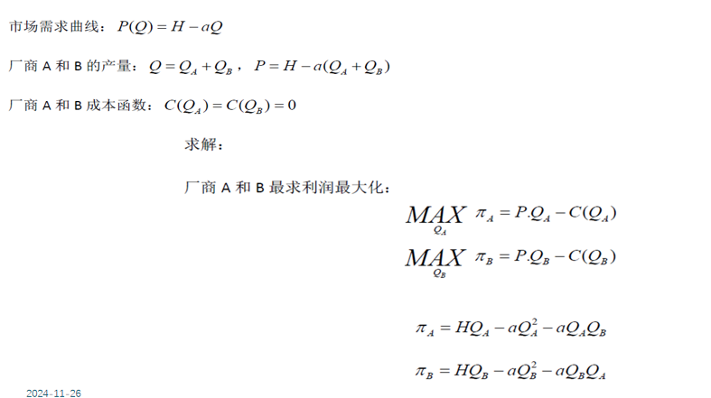
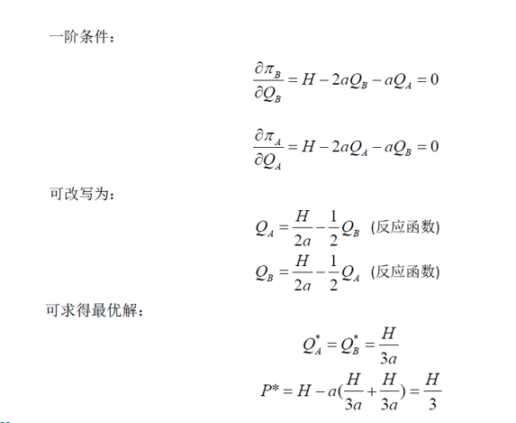
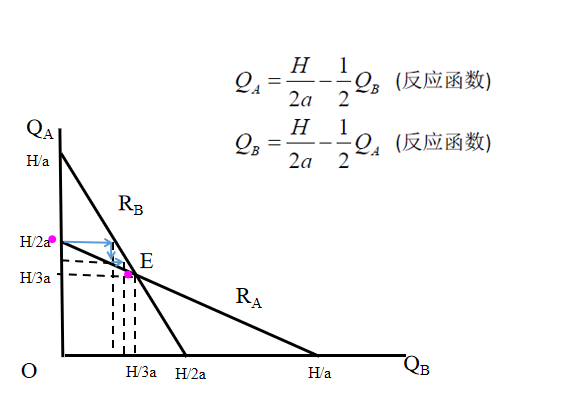
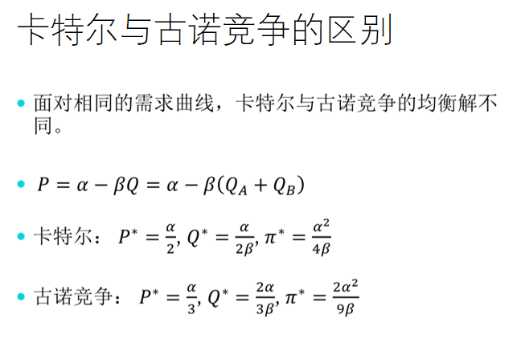

微观经济学（甲）¶
供给和需求¶
需求函数（Demand Function）¶
需求函数表示在不同价格水平下，消费者愿意购买的商品数量。一般形式为：
其中：
- \(Q_d\) 是需求量
- \(P\) 是价格
供给函数（Supply Function）¶
供给函数表示在不同价格水平下，生产者愿意提供的商品数量。一般形式为：
其中：
- \(Q_s\) 是供给量
- \(P\) 是价格
需求弹性（Price Elasticity of Demand）¶
需求弹性衡量价格变化对需求量的影响。公式为：
其中：
- \(E_d\) 是需求弹性
- \(\Delta Q_d\) 是需求量的变化
- \(\Delta P\) 是价格的变化
供给弹性（Price Elasticity of Supply）¶
供给弹性衡量价格变化对供给量的影响。公式为：
其中：
- \(E_s\) 是供给弹性
- \(\Delta Q_s\) 是供给量的变化
- \(\Delta P\) 是价格的变化
市场均衡（Market Equilibrium）¶
市场均衡是指供给量等于需求量的价格和数量。均衡条件为：
均衡价格 \(P_e\) 和均衡数量 \(Q_e\) 可以通过解以下方程组得到：
生产者理论¶
生产函数（Production Function）¶
生产函数表示在给定投入下，生产者能够生产的最大产出量。一般形式为：
其中：
- \(Q\) 是产出量
- \(L\) 是劳动投入
- \(K\) 是资本投入
固定比例的生产函数（Fixed Proportion Production Function）¶
固定比例的生产函数是一种简单的生产函数形式，表示为：
其中：
- \(Q\) 是产出量
- \(A\) 是技术水平
- \(a\) 和 \(b\) 是固定比例
柯布-道格拉斯生产函数（Cobb-Douglas Production Function）¶
柯布-道格拉斯生产函数是一种常见的生产函数形式，表示为：
其中：
- \(Q\) 是产出量
- \(A\) 是技术水平
- \(L\) 是劳动投入
- \(K\) 是资本投入
- \(\alpha\) 和 \(\beta\) 是生产弹性系数，表示劳动和资本对产出的贡献
上式取对数后可以转化为线性形式：\(\ln Q = \ln A + \alpha \ln L + \beta \ln K\)
边际产量（Marginal Product）¶
边际产量表示增加一个单位的投入所带来的额外产出。对于劳动和资本的边际产量分别为：
其中：
- \(MP_L\) 是劳动的边际产量
- \(MP_K\) 是资本的边际产量
平均产量（Average Product）¶
平均产量表示每单位投入的平均产出。对于劳动和资本的平均产量分别为：
其中：
- \(AP_L\) 是劳动的平均产量
- \(AP_K\) 是资本的平均产量
边际技术替代率（Marginal Rate of Technical Substitution）¶
边际技术替代率表示在保持产出不变的情况下，劳动和资本的替代比例。公式为：
其中：
- \(MRTS\) 是边际技术替代率
- \(MP_L\) 和 \(MP_K\) 分别是劳动和资本的边际产量
- 当 \(MRTS\) 大于 1 时，劳动和资本的替代比例大于边际产量比例；当 \(MRTS\) 小于 1 时，劳动和资本的替代比例小于边际产量比例
- 在保持产量不变的条件下，随着一种生产要素数量的增加，每增加1单位该要素所能够替代的另外一种生产要素的数量递减，即一种要素对另外一种要素的边际技术替代率随着该要素的增加而递减
短期生产的三个阶段¶
- 第一阶段：边际产量>0，边际产量>平均产量，平均产量和总产量递增
- 第二阶段：边际产量>0，边际产量<平均产量，平均产量递减，总产量递增
- 第三阶段：边际产量<0，边际产量<平均产量，平均产量和总产量递减
等成本线（Iso-Cost Line）¶
等成本线表示在不同投入价格下，生产者的总成本相同。一般形式为：
其中：
- \(C\) 是总成本
- \(w\) 是劳动价格
- \(r\) 是资本价格
- \(L\) 是劳动投入
- \(K\) 是资本投入
成本既定条件下的产量最大化¶
成本既定条件下产量最大化的要素最优组合条件：
其中：
- \(MRTS_{L,K}\) 是边际技术替代率
- \(W\) 和 \(r\) 分别是劳动和资本的价格
- \(C\) 是总成本
将\(MRTS_{L,K}\)的公式带入以上式子可以化简为：
成本函数（Cost Function）¶
成本函数表示生产一定数量的产出所需的总成本。一般形式为：
其中：
- \(C\) 是总成本
- \(Q\) 是产出量
- 生产成本：是指在一定时期内，企业生产一定数量的产品所使用的生产要素的费用
- 机会成本：是指某项资源用于一种特定用途而不得不放弃掉的其他机会所带来的成本，通常由这项资源在其他用途中所能得到的最高收入加以衡量
计算成本函数可以使用lagrange乘子法，通过最小化生产成本来确定最优的生产要素组合，如下：
其中：
- \(w\) 是劳动价格
- \(r\) 是资本价格
- \(\lambda\) 是拉格朗日乘子
- \(Q\) 是产出量
- \(f(L, K)\) 是生产函数
边际成本（Marginal Cost）¶
边际成本表示增加一个单位的产出所带来的额外成本。公式为：
其中：
- \(MC\) 是边际成本，在边际报酬递减规律的作用下，随着企业的产量逐渐增加，企业的边际成本递减；当产量达到\(Q_0\)时，边际成本最低；之后，边际成本递增。边际成本曲线与平均成本曲线和平均可变成本曲线相交，并且分别交于其最低点
平均成本（Average Cost）¶
平均成本表示每单位产出的平均成本。公式为：
其中：
- \(AC\) 是平均成本
固定成本和可变成本（Fixed and Variable Costs）¶
总成本可以分为固定成本和可变成本：
其中：
- \(FC\) 是固定成本，不随产出量变化，在图中是一条平行于 \(Q\) 轴的直线
- \(VC\) 是可变成本，随产出量变化，在图中是一条从原点出发的向上倾斜的曲线
规模报酬（Returns to Scale）¶
规模报酬表示在所有投入增加相同比例时，产出的变化情况。常见的规模报酬类型包括：
- 递增规模报酬：所有投入增加相同比例时，产出增加比例更大。
- 不变规模报酬：所有投入增加相同比例时，产出增加比例相同。
- 递减规模报酬：所有投入增加相同比例时，产出增加比例更小。
完全竞争市场¶
完全竞争市场的特征¶
市场结构及划分依据¶
| 市场类型 | 买卖双方人数 | 产品差异 | 市场进出难易程度 |
|---|---|---|---|
| 完全竞争 | 极多 | 无 | 容易 |
| 完全垄断 | 一个 | 无 | 无法 |
| 寡头垄断 | 少数几个 | 或有或无 | 较难 |
| 垄断竞争 | 很多 | 有 | 较易 |
完全竞争市场基本特征¶
- 存在大量的买者与卖者（price taker）
- 产品是同质的（Homogeneous, perfect substitutes）
- 无进入和退出障碍（No barriers to entry or exit ）
- 信息完全（Perfect information）
收益函数¶
收益函数表示在不同价格水平下，生产者的总收益。一般形式为：
其中：
- \(R\) 是总收益
- \(P\) 是价格
- \(Q\) 是产出量
在完全竞争市场上，单个企业是价格的被动接受者，其需求函数为一条水平线，价格为 \(P\)。
平均收益（Average Revenue）和边际收益（Marginal Revenue）分别为：
利润函数¶
利润函数表示在不同价格水平下，生产者的总利润。一般形式为：
其中：
- \(\pi\) 是总利润
- \(R\) 是总收益
- \(C\) 是总成本
- \(P\) 是价格
- \(Q\) 是产出量
利润最大化函数¶
利润最大化函数表示生产者在不同产出量下的最大利润。一般形式为：
利润最大化的条件是边际收益等于边际成本。在完全竞争市场上，价格等于边际成本。
企业规模的调整¶
长期调整¶
长期的规模调整，或长期的利润最大化，就是在所有的短期均衡中选择一个“最优”的短期均衡。
完全竞争企业要在长期实现利润最大化，需要满足：
其中：
- \(P\) 是价格
- \(LMC\) 是长期边际成本
完全竞争企业要实现规模最优，需要满足：
其中：
- \(SAC\) 是短期平均成本
- \(LAC\) 是长期平均成本
完全竞争市场长期均衡的条件是：
完全竞争企业的长期均衡条件是价格等于长期边际成本，且等于长期平均成本。根据长期边际成本和长期平均成本的关系，该条件又意味着，价格总是等于长期平均成本曲线的最低点。
例题：

解析
不完全竞争市场¶
完全垄断市场¶
只有一个厂商，不存在替代品，有严格的进入壁垒。
成因有：规模经济（自然垄断）、政府特许（行政垄断）、对资源的控制（资源垄断）、专利与知识产权（专利垄断）
垄断企业的需求曲线是一条向右下倾斜的直线。
收益曲线：
解释：
- TR：总收益
- MR：边际收益，边际收益公式中的 \(|E_d|\) 是需求弹性，需求弹性求法为 \(E_d = \frac{\Delta Q}{Q} / \frac{\Delta P}{P}\)
垄断厂商不存在供给曲线，因为同一产量下可以有多个价格，即价格和产量之间不是一一对应的。
均衡条件：
价格歧视：对不同消费者销售同一商品，但价格不同。条件：有市场支配力，存在市场分割，无法转售。
一级价格歧视：向每位消费者索取所愿意支付的最高价格。 二级价格歧视：根据消费者的购买量来定价。 三级价格歧视：以不同的价格向不同类型的消费者或在不同市场上出售同一商品，此时有$ MC = MR_1 = MR_2 $。
三级价格歧视均衡条件：
即：$ MR_1 = MR_2 = MC $
对弹性大的市场定价较低，对弹性小的市场定价较高。
垄断竞争市场¶
厂商多，单个厂商对价格影响小；产品差异化，有很强替代性；市场进出自由；信息基本完备。
改变价格会影响本产品的销量，但不会影响整个市场的价格。
主观需求曲线d：单个厂商改变价格，其他厂商价格不变 实际需求曲线D：单个厂商改变价格，其他厂商价格同时变化
垄断竞争企业的短期均衡条件是：由dd曲线与DD曲线的交点所决定的现实产量恰好等于由边际收益曲线MR与边际成本曲线MC的交点所决定的利润最大化的产量。
长期中厂商可以自由进入和退出，长期均衡利润必定为零。
寡头市场¶
古诺模型¶
假设： （1）只有两个厂商(寡头甲和寡头乙)； （2）生产同质产品（矿泉水）； （3）生产成本为零； （4）厂商都准确了解市场需求曲线； （5）厂商无合谋； （6）厂商通过调整产量实现利润最大化
N个厂商的古诺均衡条件：



斯威齐模型¶
假设：如果一厂商提价，其他厂商不会跟着提价，因而提价厂商的销售量减少很多；如果一厂商降价，其他厂商也降价，因而降价厂商的销售量增加有限。
结论：弯折的需求曲线→间断的边际收益曲线→价格刚性。
勾结性模型¶
公开勾结：为了维持较高价格通过明确协议正式勾结在一起的一群厂商。制定统一的价格、分配产量。
非公开勾结：由一家厂商制定价格，其他厂商均按照此价格销售。
卡特尔(Cartel)：同一行业的少数几家厂商为增进共同利益而采取一致行动的集团或组织。成功条件：（1）对产品的总需求弹性不能很大；（2）该卡特尔必须几乎控制所有的世界供给；（3）卡特尔成员必须能够共同遵守协定。

卡特尔最大的问题是不稳定性，因此此时需求曲线有相当大的弹性，只要有一个企业稍微降低价格，就可以大大增加销量。
寡头市场总结¶
没有统一价格和产量决定模型，一般认为寡头市场的效率介于完全竞争市场和垄断市场之间。
要素市场¶
最重要的两种要素是劳动和资本。
劳动市场¶
劳动市场也是由供给和需求决定的。
生产函数说明用于生产一种物品的投入量和该物品产量之间的关系。劳动的边际产量计算：
边际产量递减规律：在其他投入不变的情况下，劳动投入增加，边际产量递减。
边际产品价值：边际产品价值是指劳动的边际产量乘以产品的价格。
为了实现利润最大化，企业应该雇佣劳动直到边际产品价值等于劳动的边际成本。即
。
在完全竞争的条件下，任何一家企业单独增加或减少产量都不会影响市场价格，因此产品价格是一个固定值。企业使用要素的边际成本等于固定不变的要素价格。
完全竞争企业对要素的需求曲线与要素的边际产品价值曲线恰好重合。
要素供给曲线是正斜率的，因为劳动者愿意提供更多的劳动，只要他们的工资增加。要素所有者的行为目的是效用最大化和利润最大化。
要素供给原则：自用资源(H)的边际效用与消费(C)的边际效用的比率必须等于要素的价格。
效用函数：
，约束条件：
。
约束条件下的效用最大化：
。
劳动供给问题可以看做是消费者如何决定其固定的时间资源中闲暇所占的部分，或者如何决定其全部资源在闲暇和劳动供给两种用途上的分配。
闲暇商品的需求受到替代效应和收入效应的影响。如果替代效应大于收入效应，劳动供给随其工资上升而增加；如果收入效应大于替代效应，劳动供给随其工资上升而减少。
土地市场¶
土地所有者的效用函数：
土地的供给曲线是垂直的且固定不变。地租的大小与土地的供给曲线没有关系，完全由土地的需求曲线决定。
资本市场¶
资本的短期供给曲线和土地一样，是垂直的直线。
边际产量（MP，Marginal Product）：增加一个单位要素所带来的额外产出。 边际产品价值（VMP，Value of Marginal Product）：边际产量乘以产品价格。\(VMP = P \cdot MP\) 边际产品收益（MRP，Revenue of Marginal Product）：增加一单位要素投入所增加的收益。\(MRP = MP \cdot M\)
一般均衡和福利经济学¶
一般均衡¶
一般均衡（General Equilibrium）：分析所有商品和生产要素的供求与价格相互影响相互依存时，所有商品和生产要素的供求均衡及其价格决定的方法。
假设条件：
- 经济中有大量的生产者和消费者
- 消费者：效用最大化；预算约束；零储蓄
- 消费者：供给生产要素(要素供给方),消费商品(商品需求方)
- 要素市场和产品市场都是完全竞争的，零交易费用
- 生产者：利润最大化；技术约束；零投资
一般均衡具有以下特征：效用最大化，最优要素供给，利润最大化，全局均衡。
瓦尔拉斯一般均衡模型：瓦尔拉斯一般均衡模型是瓦尔拉斯在19世纪末提出的一种经济模型，用于描述一个经济体系中所有市场的供求关系。
需求函数：\(Q_i = D_i(P_1, P_2, ..., P_n),i=1,2,...,n\) 供给函数：\(Q_i = S_i(P_1, P_2, ..., P_n),i=1,2,...,n\) 超额需求函数：\(E_i = D_i - S_i,i=1,2,...,n\) 一般均衡条件： $$ E_i(P_1, P_2, ..., P_n) = 0,i=1,2,...,n $$
“瓦尔拉斯法则”：只要由n个市场所构成的经济中的n-1个市场实现了均衡，则最后一个市场自然同时实现均衡。
福利经济学¶
社会经济福利最大化的两个条件：边际私人产值等于社会边际产值（外部性、不完全竞争导致两者不相等，政府干预）；社会成员货币收入的边际效用相等（富人的货币边际效用低于穷人的货币边际效用，建议累进税）。
如果既定的资源配置状态的改变使得至少有一个人的状况变好，而没有使任何人的状况变坏，则这种改进被称为帕累托改进。
对于某种既定的资源配置状态，所有的帕累托改进都不存在，即如果不使别人的境况变坏，就无法使任何一个人的境况变得更好的经济状态。这个状态被称为帕累托最优状态。
福利经济学第一定理：每一个完全竞争均衡都是帕累托最优的。---说明完全竞争经济是有效率的。
福利经济学第二定理：在一定条件下，每一个帕累托最优配置都可以通过完全竞争来达到。---任何帕累托有效配置都能得到市场机制支持。
公平与效率¶
公平与效率是经济学中的两个重要概念，公平是指资源的分配是否合理，效率是指资源的利用是否最大化。
在大多数情况下，公平和效率两个目标存在某种权衡（Trade-off）：为了提高效率，有时必须忍受更大程度的不平等；为了增进公平，有时又必须牺牲更多的效率。
一种思路：效率优先、兼顾公平
收入再分配措施：税收政策、政府支出、社会保障、扶贫政策、第三次分配
市场失灵与微观经济政策¶
市场失灵¶
市场失灵（Market Failure）是指市场机制不能有效配置资源，导致资源配置效率低下的现象。现象有：垄断、外部性、公共物品、不完全信息与信息不对称、收入分配不平等。
垄断¶
勒纳指数：\(LI = \frac{P-MC}{P}\)，\(L\)越大，市场越不完全竞争。其中：\(P\)是价格，\(MC\)是边际成本。
外部性¶
外部性(Externality)：单个生产者或消费者的经济行为对社会上其它人的福利产生的影响，而又未将这种影响计入双方市场交易的成本与价格之中的现象。
外部性可能导致市场配置资源的效率低下。外部性分为正外部性和负外部性。
科斯定理（Coase Theorem）：当交易成本为零，只要产权界定清晰，则无论在开始时将财产权赋予谁，市场均衡的最终结果都是有效率的。
科斯第二定理：在交易成本为正的情况下，不同的权利安排将会产生不同的资源配置结果。
科斯第三定理：在交易成本为正的情况下，产权的清晰界定有利于降低交易成本，提高资源配置的效率。
总结常见的名词¶
- A：Average，平均
- M：Marginal，边际
- P：Price，价格
- Q：Quantity，数量
- T：Total，总的
- C：Cost，成本
- F：Fixed，固定
- V：Variable，可变
- L：Labor，劳动
- K：Capital，资本
- E：Elasticity，弹性
- S：Supply，供给
- D：Demand，需求
- R：Revenue，收益
- P: Production，生产
- U: Utility，效用